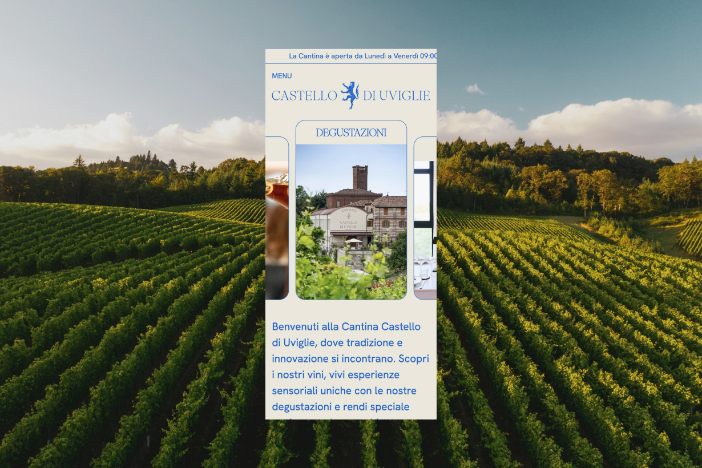

2024
Cantina Castello di Uviglie Website

A timeless website for a historic winery in Monferrato.
For Castello di Uviglie, I developed a website that perfectly captures the winery’s heritage and brand identity. The site features a showcase of their wine collection, an event booking system, and a section on the estate’s history. Combining tradition with modern functionality, the design provides an authentic experience that aligns with the winery’s values and story.
Contributor: Gorazd Guštin.